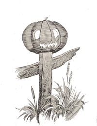
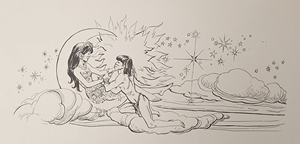
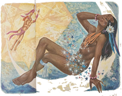
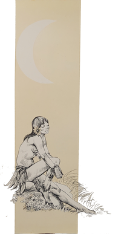
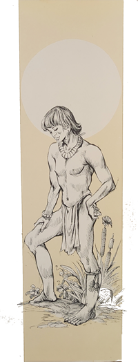
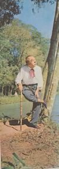

Minha gente, a noite já vem chegando – disse o Arrelia. Amanhã cedo vamos até o povoado. Lá arranjaremos condução e iremos conhecer o Rio Amazonas.
- Oba! – gritaram uns.
- Depois seguiremos nossa viagem – continuou o Arrelia.
- Que bom! exclamaram os outros.
O Arrelia prosseguiu:
- Seria interessante acendermos a fogueira para alegrar o acampamento e preparar o jantar. Vamos procurar lenha? A que havíamos apanhado já acabou.
- Vamos, Arrelia! – disseram todos de uma vez e saíram correndo.
Poucos minutos depois já havia lenha mais do que suficiente para aquela noite.
- Pronto! Já chega! – avisou o Arrelia. Não vamos fazer uma fogueira de São João! Onde estão os fósforos? Ah, aqui! Arrumem direito. Isso! Até parecem escoteiros!
- Eu peguei mais lenha! – gritou Carlinhos.
- Mentira! Fui eu! – afirmou Sérgio.
- Calma! – pediu o Arrelia. Todos colaboraram e fizeram o possível. Entre amigos não pode haver disputa. Quem tem mais sorte ajuda o que tem menos. “Entendiudos”?
- Entendidos? – repetiram os dois briguentos.
- Arrelia! – chamou Carlinhos.
- Ai, ai, ai! Lá está você puxando o meu paletó outra vez, Carlinhos! – reclamou o Arrelia. Qualquer dia você vai ficar com um pedaço dele na mão! Puxa, olhe que belo fogo! Mas o que foi, Carlinhos?
- Não sei por que motivo mas não gosto da noite.

- Não gosta? É tão bonita!
- É, mas fico sempre com a impressão de que vou ver um fantasma!
- Que é isso? Um menino como você, que estuda e mora na cidade, com medo de fantasma!
- Tenho mesmo!
- Como é que na primeira noite você não disse que estava com medo?
- E não tive!
- Não? Ué! Que camarada complicado, mas “complicaudo” mesmo!
- Eu estava tão cansado que nem pensei nisso!
- Estão vendo como o cansaço é saudável? Quem estuda ou trabalha bastante não tem tempo para pensar em bobagens, não é verdade?
- Mas você não tem medo, Arrelia? – surpreendeu-se Carlinhos.
- É claro que não! Já não disse que não podemos crer em fantasmas?
- Não viu nenhum? Nunca levou um susto?
- Ora, ora. Não existe fantasma! Quanto ao susto, uma vez levei um que até hoje me arrepia! Foi uma brincadeira que não foi brinquedo! Eu estava tratando de um negócio num sítio. Era um negócio de terras e ia demorar um pouco. Fiquei hospedado lá mesmo por ser longe da cidade. Eram boas pessoas, mas algumas gostavam de pregar peças nos estranhos, o que fiquei sabendo depois.
Antes de irmos dormir, na primeira noite, permaneci com o pessoal sentado em volta do fogo, no terreiro. Todos falavam quase sempre sobre fantasmas. Fantasma daqui, fantasma dali. Como eu não queria parecer antipático, sempre que eles terminavam uma estória eu fazia uma cara “daqueulas! Alguns acabaram acreditando que eu era medroso e depois prepararam a brincadeira. Foi assim: Sentindo sono, recolhi-me ao cômodo que me haviam indicado: um quarto grande, com porta para o terreiro, e sem luz elétrica. Aliás, não havia luz elétrica em todo o sítio. Acendi o lampião e deitei-me.
Dois dos empregados resolveram pregar-me um susto. Arranjaram uma abóbora bem grande, deixaram-na oca e fizeram buracos formando os olhos, o nariz e a boca. Dentro colocaram uma vela. Em frente e bem perto da porta do meu quarto havia um pouco de mato. Espetaram a abóbora num pau e o enfiaram no meio das plantas de modo que a abóbora ficasse um pouco escondida, evitando que eu percebesse de pronto a brincadeira. É claro que só descobri isto depois. Eu já estava dormindo quando ouvi umas batidas esquisitas na porta. “Quem é?” – perguntei. Nada. Bateram outra vez. Resolvi ver o que era. Abri a porta. Tudo em ordem. Naturalmente a abóbora já estava no seu lugar, mas como a vela não tinha sido acessa, nada percebi. Voltei a me deitar. Ia dormindo outra vez e ouvi as mesmas batidas.
- Estou todo arrepiado! – exclamou Carlinhos estremecendo-se.
- Como você é medroso, Carlinhos! – disse o Arrelia sacudindo a cabeça. Mesmo sabendo que foi brincadeira?
Bem, como eu estava dizendo, ouvi as mesmas batidas. Só que acompanhadas por uns gemidos tão tristes e profundos que sem querer dava um friozinho na espinha. Perdi o sono. Os gemidos não paravam. Criei coragem e abri a porta novamente. Nada. Como os dois empregados ouviam o barulho que eu fazia na fechadura ao abrir a porta, tinham tempo de esconder-se.
Eu já estava aborrecido, os nervos à flor da pele. Não sei como não imaginei que era uma brincadeira. Talvez a necessidade de dormir não me deixasse pensar direito, pois eu estava cansado que não aguentava mais. As batidas e os gemidos tornaram a voltar. Além deles, eu ouvia distintamente um arrastar de correntes. Lembrei-me que me haviam contado uma estória de escravo assassinado, o qual costumava voltar de vez em quando. Batia nas portas, gemia e arrastava as correntes, pondo todo o mundo de cabelo em pé. Seria possível? Eu não acreditava em fantasmas! Fiquei ouvindo. Era impressionante! Aquele arrastar de correntes dava nos nervos. E os gemidos então?
Por fim não aguentei mais. Pulei da cama, arrumei-me, decidido a não deitar-me mais sem haver resolvido o mistério, fosse qual fosse. Abri a porta o mais depressa que pude. Com tanta força que levei uma batida. Aí quem gemeu fui eu. Para completar, o lampião havia-se apagado.
- Ah, ah, ah! – riu Jaci. Que divertido!
- Você está rindo, não é, Jaci? Mas se estivesse no meu lugar... Com a batida, meu chapéu caiu. Tratei de pegá-lo e segurei uma coisa esquisita. Parecia uma pena. Assustado como eu estava, dei um berro. Mais tarde vi que era a pena de meu próprio chapéu, jogado no canto perto da porta. Fiquei todo atrapalhado pois ainda não sabia o que era. Quase caí. Desisti de encontrar o chapéu e saí. Então...
- Que foi, Arrelia? – quis saber Marisa.
- Aí dei com a abóbora! Os “bandiudos” tinham acendido a vela e a abóbora parecia uma caveira me olhando com seus grandes olhos de fogo! A boca enorme parecia que estava gemendo, falando! Ai de mim. Não sabia se corria, se entrava no quarto....
- Que susto, não, Arrelia? – interrompeu Iberê.
- Espere aí! O melhor aconteceu depois!
- É? O que foi?
- Eu me encontrava ali parado, sem saber o que fazer, os olhos presos naquela caveira de fogo! Como o pau não estava bem preso no chão, por qualquer motivo caiu. Ao cair, a caveira virou-se para eles que se encontravam escondidos atrás dela. Eles também já deviam estar com os nervos tensos pois deram um grito ao mesmo tempo e saíram correndo pelo mato como se o “fantausma” os estivesse perseguindo. Achei a abóbora e compreendi tudo. Fui dormir sossegado. Se eles dormiram, não sei.
No dia seguinte foi fácil perceber que haviam feito a brincadeitra.
- Como, Arrelia? – interrogou Sérgio.
- Logo na hora do café eu disse:
- Parece que ontem andou fantasma por aqui


- Não diga! – respondeu o dono do sítio.
- Andou reinando lá no meu quarto. Gemia e arrastava correntes!
- Era o escravo! – exclamou um dos empregados.
Fitei um por um. Todos me olhavam de boca aberta. Só dois não levantaram a cabeça. Tomaram o café depressa e foram saindo, Completei:
- Parece que o fantasma assustou mais alguém, pois ouvi um grito!
Os dois forma embora sem jeito. Acho que nunca mais pensaram em assustar alguém.
- Que castigo, hein, Arrelia? – exclamou Carlinhos, animado.
- Se foi. Mas hoje você não precisa ter medo de fantasmas, Carlinhos.
- Por quê?
- Veja a Lua como está maravilhosa! Olhe como tudo está claro!
- É mesmo! Mas ainda prefiro a luz do Sol. É bem mais clara!
- Não há dúvida. Deixe estar, porém, que a Lua também é muito “boniuta”. E a noite é muito necessária. Já pensaram se fosse sempre dia? Como era naquela estória que contei? Ninguém podia descansar direito. Já houve tempo em que o Sol queria brilhar sozinho e a Lua também. Depois ficou resolvido que seria como é agora.
- Como é que foi, Arrelia? – perguntou Marisa, puxando a manga do Arrelia.
- Já conto, Marisa. Mas não vão estranhar que nesta estória a Lua é mulher, hein? Naquela outra era um guerreiro, lembram-se? Estória é assim mesmo.
Faz muitos anos, o Sol e a Lua não eram o que são hoje. Eram duas pessoas de carne e osso como nós.
- Não diga! Então não havia nem Sol nem Lua? – admirou-se Jaci.
- É claro que não. Tudo era escuro. Uma escuridão “brauba”! Na nossa primeira estória era sempre dia, não é mesmo?
- E como é que enxergavam? Como é que podiam andar? – perguntou a menina.
- Bem. As estrelas davam uma ajudazinha. Também as pessoas faziam fogueiras... Ah! E havia os vaga-lumes! Cada índio criava os seus próprios vaga-lumes. Clareavam a casa e quando a pessoa saía, eles iam à frente iluminando o caminho. Um vaga-lume era muito importante naquele tempo. Enfim, todos iam vivendo. O Sol era um belo rapaz, muito forte e inteligente. A Lua era uma indiazinha bonita e delicada. Encontraram-se um dia numa festa da tribo, uma grande festa iluminada por fogueiras e vaga-lumes. O Sol viu a Lua e ficou apaixonado por ela. A Lua viu o Sol e também ficou gostando dele. E se tornaram “namoraudos”.
O Arrelia parou um pouco de falar e Iberê não aguentou a impaciência:
- E depois, Arrelia?
- Calma! Preciso tomar fôlego!
- Acho que ele esqueceu a estória! – cochichou Carlinhos no ouvido de Sérgio mas deu para o Arrelia ouvir:
- Esse Carlinhos! Não esqueci, não! Onde eu estava? Ah! Vocês me deixam “atrapalhaudo”!
Pois é. Começaram a namorar. Só que a Lua era muito orgulhosa e gostava de ser importante. Não era a qualquer festa que ela ia, não. Nem a qualquer passeio. O Sol era mais camarada e aceitava qualquer convite. Assim, enquanto a Lua ficava geralmente fechada na cabana, o Sol andava por tudo quanto era lugar, divertindo-se a valer. Caçava, pescava, nadava.
Sérgio deu um suspiro:
- Bem que eu gostava de levar uma vida assim. Sem preocupação, só passeando.....
- Eu também – concordou o Arrelia. Infelizmente não é possível. Temos muitas obrigações. Temos de estudar e trabalhar. O importante é saber dividir o tempo. Quem assim faz, cumpre suas obrigações e ainda consegue divertir-se. Também se fizéssemos uma coisa só, acabaríamos ficando enjoados. O próprio divertimento acabaria cansando.
- É verdade – respondeu Sérgio pensativamente.
O Arrelia prosseguiu:
- Mas por causa do Sol levar aquela vida, a Lua não andava muito contente. Queria que ele fosse mais “preocupaudo”; que selecionasse melhor suas amizades. Era, porém, orgulhosa e nada dizia. O Sol notava que ela não estava satisfeita e não sabia por que motivo. Ficava pensando, pensando.... De vez em quando perguntava à “namorauda”:
- Não sei se é impressão minha. Parece-me que você está aborrecida! Posso saber o motivo? Fiz alguma coisa errada?

- Não, não há nada. Você está cismado.
- É? Ainda bem. Antes sim.
E a Lua ficava pensando: “Será que ele não percebe?”
- E por que ela não dizia o motivo, Arrelia? – quis saber Iberê.
- Porque era orgulhosa e queria que ele entendesse. Percebeu?
- As mulheres são assim – disse o menino. Não tem muito juízo, não.
- Quem não tem juízo são vocês, os homens! Não deixam de ser crianças! – sentenciou Jaci.
O Arrelia interferiu:
- Jaci, Iberê! Que é isso? Que exaltação, puxa!
- E não tenho razão? Elas não sabem o que querem! – disse o menino, exaltado.
- Não sabemos?! Se não fossem as mulheres, vocês morreriam de fome! Nem sabem cozinhar!
- E não há bons cozinheiros? – perguntou Iberê.
O Arrelia coçou a cabeça:
- Ih! Vou ter de ir buscar um balde de água para esfriar os ânimos! Posso continuar com a estória?
- Pode, Arrelia! – gritaram todos.
- Também havia outra coisa que aborrecia a Lua: ela era muito vaidosa e gostava de enfeitar-se, de pintar-se. O Sol não se cuidava muito. Como falei, ele vivia mais preocupado em gozar a vida. Tanto o Sol insistiu com a Lua para que lhe contasse o motivo de sua tristeza que um dia a Lua, pondo de lado o orgulho, contou o que se passava:


- Você deveria ser mais vaidoso e mais exigente! Queria que se enfeitasse mais! Que escolhesse suas amizades com mais cuidado e também os seus passeios!
- Por quê? Gosto de ser simples, de conviver com todos, de ir a todos os lugares!
- Mas não está certo! Assim não estou contente. Quero que meu namorado seja mais importante do que os outros!
O Sol ficou muito triste. Mas como gostava da Lua, pôs-se a pensar no que ela havia dito. Começou a evitar os amigos, a ir sozinho pescar, caçar e nadar, com ares de importante. Todos notaram a diferença. Começou a ficar vaidoso também. Enfeitava-se com as mais lindas penas. Sua preocupação agora era conseguir os enfeites mais bonitos. A Lua, por sua vez, vendo que o Sol estava ficando mais enfeitado do que ela, tratou logo de conseguir coisas mais valiosas e não deu mais sossego ao pai dela.
- Ao pai dela? Por quê? – estranhou Marisa.
- Ora, Marisa, você acha que ela ia andar pela selva procurando coisas bonitas para fazer colares e caçando aves para tirar as penas? Era muito orgulhosa para fazer tais trabalhos. O pai que se “danausse”! O pobre não teve mais sossego:
- Papai! Vai haver uma festa e não quero usar os meus enfeites velhos! Quero que o senhor consiga as penas mais bonitas que possam existir!
- O que está acontecendo? Você foi sempre vaidosa, é verdade. Mas agora! Não faz mais nada senão enfeitar-se! E eu, então, vivo procurando penas, dentes, nem sei o que mais!
- E por que ele obedecia? – tornou Marisa.
- Ora, Marisa! Porque era um bom pai e não gostava de ver a filha triste!
Sempre que a Lua lhe pedia mais enfeites, ele insistia para que ela lhe contasse qual era o motivo de tanta vaidade. Tanto insistiu que ela acabou contando tudo. Ficou louco da vida. Então por causa do “bandiudo” do Sol, ele, que já não era muito moço, andava pela selva que nem um condenado, procurando enfeites para a filha! Bufou, xingou, praguejou e continuou a fazer a vontade da Lua. Não podia, porém, ver mais o Sol. Estava com uma raiva louca daquele moço que só sabia enfeitar-se.
Um dia o pai da Lua estava perto de um rio caçando pássaros para conseguir penas, pois logo ia haver uma grande festa. O Sol também devia ir e andava procurando, da mesma forma, conseguir penas bonitas. Embora o pai da Lua estivesse com raiva do moço, os dois continuaram com a amizade.
- O senhor também está caçando? – perguntou o Sol assim que se avistaram.
- Sim – respondeu o índio, meio carrancudo. Vai haver uma grande festa e minha filha quer ir bem enfeitada.
- É verdade. Também vou. É por causa disso que estou aqui. Quero conseguir as mais bonitas penas para fazer belos enfeites.
- Aproveitando a ocasião, você poderia também conseguir penas e outros enfeites para a Lua, não é mesmo? Afinal não seria mais do que a sua obrigação. Já não sou tão novo para andar atrás dessas coisas.
- Realmente. Mas a culpa não é minha. Ela não aceita nenhum presente meu! É muito orgulhosa e diz que a obrigação é do senhor!
- Ah! – resmungou o velho. Cada coisa que acontece!... Que brincadeira!
Andaram por ali caçando, escolhendo as aves mais bonitas.
- Arrelia! – chamou Carlinhos aflitamente.
- Diga, Carlinhos. Ainda bem que desta vez você está longe e não puxou o meu paletó. Ele já está ficando até mais comprido atrás. Olhe.
- Quem ficava perto do Sol não se queimava?
- Eta Carlinhos danado! É louco para fazer confusão! Eu não disse que o Sol era um homem comum? Como é que ia queimar?
- Acho que não ouvi. E como é que ele se transformou no Sol?
- Mas ainda não terminei a estória! Você está brincando comigo, não está? Espere aí que chamo um “fantausma”!
- Não, Arrelia! Fantasma não! Pode contar!
- Como eu estava dizendo, eles ficaram por ali caçando. É claro que o Sol, sendo mais moço, levava a melhor e caçava mais aves e as mais bonitas.
Aí surgiu no céu, voando devagar, majestosamente, uma ave muito bonita. Devia ter vindo de longe pois eles não sabiam que ave era.
- Olhe! – gritou o Sol. Veja que ave maravilhosa!
- Que ave será? Não a conheço!
- Vai ver que Tupã a enviou para que eu me enfeite com as suas penas.
- Se Tupã a enviou, foi para minha filha ser a mais linda da festa!


A ave desceu e pousou numa árvore muito alta. Agora eles podiam ver melhor suas cores. Eram lindas. Todas as cores do arco-íris estavam ali representadas. Os dois ficaram de boca aberta. Tão distraídos que se esqueceram de caçá-la. Aí o Sol gritou:
- Preciso pegá-la! Tem de ser minha!
- Eu vou pegá-la – respondeu o pai da Lua, em atitude de desafio.
Cada um preparou depressa o arco e a flecha e apontaram para a pobre que estava bem “sossegauda”. De repente a ave voou, ganhando altura.
- Lá vai ela! – gritou o Sol.
- Vai fugir! – exclamou o pai da Lua desesperadamente.
Atiraram as flechas. O Sol, embora fosse melhor atirador do que o velho, por qualquer motivo errou. Sua flecha passou longe. A flecha do outro acertou em cheio. Porém a ave, como já estava à grande altitude, foi cair do outro lado do rio. O Sol ficou louco da vida quando viu que havia errado. Pulou, deu um chute numa pedra que o fez urrar de dor. O velho, ao contrário....
- Arrelia! – chamou novamente Carlinhos.
- Ih! Lá vem ele de novo! – exclamou o Arrelia, encolhendo-se todo. Que foi desta vez, Carlinhos?
- Eu estava pensando: você não disse que não havia nem o Sol nem a Lua?
- Pois eles não estavam na Terra?
E que era tudo escuro?
- Disse, ué. Mas havia as estrelas, as fogueiras, os vaga-lumes....
- E como é que eles podiam enxergar a ave lá no alto e também saber quais eram suas cores?
- Ah! Moleque! Desta vez me pegou!
- O que você está falando baixinho, Arrelia? – quis saber Carlinhos.
- Hein? Eu? Estava dizendo que não era tão escuro assim. Acho que as estrelas estavam mais perto. E como as pessoas viviam no escuro, tinham os olhos como os do gato, entende?
- Então por que usavam vaga-lumes e acendiam fogueiras para iluminar?
- Não é que ele quer jogar-me no fogo?! Naturalmente para quando as estrelas se afastavam! Não era como hoje. Às vezes ficavam muito perto, às vezes não, entende?
- Nós entendemos! – exclamou Iberê para terminar a questão.
- Puxa, desta vez escapei! – murmurou o Arrelia.
- Que foi, Arrelia? – perguntou Marisa, que havia percebido o Arrelia falar mas não entendido.
- Nada, Marisa – apressou-se ele. Eu disse que o velho, o pai da Lua...
- Sim?
- ... ao contrário, ficou muito contente. Pulando de alegria, ele falou:
- Eu não disse que Tupã havia enviado a ave para a minha filha?
- Então não foi Tupã porque senão eu teria acertado!
- E você se julga melhor do que eu? – gritou o pai da Lua, mostrando que não estava para brincadeira.
O Sol, que era esperto, percebeu que podia criar inimizade com o velho, o que, é lógico, não seria interessante. Assim, procurou acalmá-lo:
- Eu não quis dizer isso! Bem, vou buscar a ave para o senhor.
- Nada disso! Se minha filha não quer favores seus, eu também não quero. Eu mesmo vou busca-la.
- Mas é preciso atravessar o rio e não temos nenhuma canoa aqui! Tem de ser a nado!

- E o que você pretende dizer? Então não sei nadar?
- E ele sabia, Arrelia? – interessou-se Iberê.
- Saber, ele sabia. Só que fazia uns vinte anos que não nadava.
- Acho que uma pedra nadava melhor do que ele, não? – comentou Sérgio.
- Talvez, Sérgio, talvez – respondeu o Arrelia e prosseguiu:
- O velho era teimoso e não quis saber de nada. Pulou na água e foi nadando. No meio do rio é que a coisa aconteceu. Não aguentou e começou a afogar-se. O Sol saltou na água e nadou rapidamente em direção do pai da Lua. O velho já estava nas últimas. O Sol chegou bem a tempo, pôs o velho a salvo e foi buscar a ave.
- Eis a sua ave – disse o Sol.
- Minha não! Sua! – exclamou o velho.
- Como assim? – admirou-se o Sol.
O velho olhou para ele, ficou uns instantes em silêncio e depois, destacando bem as sílabas, como se o outro fosse meio surdo, disse:
- A ave é sua e não minha. Sabe por quê?
Ficou mais um pouco em silencia e explicou:
- Se você me salvou a vida e ainda foi buscar a ave, tem mais direito a esta do que eu!
- De nenhum modo! Não posso aceitá-la! Fique com ela!
Os dois permaneceram naquilo um bom tempo. Aí o velho teve uma ideia mas não a revelou ao Sol.
- Está certo. Levarei a ave. Vamos – disse o pai da Lua.

Quando chegaram à aldeia, o velho propôs dividir as penas entre o Sol e a Lua. O Sol ficou horrorizado. Nunca! A Lua ficou brava como onça. O que? Usar as penas da mesma ave? Nem sonhando! O Sol que ficasse com a ave inteira! Ela não aceitou, nem a Lua, e a ave foi jogada num canto da cabana. Depois ele foi embora zangado. Ao saber que o namorado salvara seu pai, a Lua ficou mais aborrecida ainda. Não tinha dúvida de que o Sol ia ficar mais vaidoso do que nunca. Pouco depois toda a aldeia sabia do caso e as maiores homenagens foram prestadas ao herói. Só se falava no Sol.
A Lua, para acalmar-se, foi dar uma volta pela redondeza. Ao passar perto de um abismo, cuja profundidade ninguém sabia, ouviu uns gritos que vinham de dentro dele. Olhou cuidadosamente para ver o que era. Logo abaixo, agarrada a umas pedras, estava a mãe do Sol, já no fim de suas forças. Tinha-se distraído e caído no abismo. O que fazer? Se fosse até a aldeia, não voltaria a tempo de salvar a velha índia. Rapidamente a Lua apanhou um cipó, amarrou-o a uma árvore perto do abismo e, agarrando-se ao cipó, desceu até as pedras. Arriscando a vida, conseguiu amarrar a mulher pela cintura. Subiu e começou a puxar a mãe do Sol. Não teria aguentado aquele peso, mas, sentindo-se perto da salvação, a mulher agarrou-se com unhas e dentes nas saliências do abismo e ajudou a Lua a salvá-la.
Quando voltaram à aldeia, o Sol estava entre uma roda de rapazes contando como salvara o pai da Lua, Aí a mãe dele contou o que havia acontecido. Logo a Lua começou a ser homenageada. Com todo o orgulho possível, ela disse ao Sol:
- Agora estamos iguais, não estamos?
Continuaram a namorar, porém a disputa era maior do que antes. Um não sabia o que fazer para se destacar mais do que o outro. Toda a tribo acompanhava a luta dos dois.
A Lua e a sua família andavam tão preocupados que nem se lembraram da ave largada num canto da cabana. Ficou ali uma porção de tempo sem que ninguém percebesse.
A tal festa muito importante ia realizar-se na aldeia. Grandes preparativos estavam sendo feitos, muita bebida e muita comida. O pai da Lua estava às voltas com novos enfeites e o Sol também andava pela selva com a mesma intenção.
Mais tarde, a Lua recebeu os enfeites e preparou-se o melhor que pode. Quando o Sol chegou, ela estava muito bonita. Ele também chamava a atenção. Aí ele disse à “namorauda”:
- Como os seus enfeites são lindos!
A lua ficou toda orgulhosa. Ele completou:
- Só que os meus são mais bonitos!
- Os seus? Ah, ah, ah! – caçoou a Lua, olhando para o Sol com cara de compaixão.
O pai dela, muito aflito, vendo a discussão que já se formava, ia de um lado para outro, sem saber o que fazer. E os dois vaidosos falavam, falavam, nenhum querendo perder. O velho, aflito para acabar com aquilo, andava e olhava por todos os cantos. Acabou encontrando a ave, um pouco escondida por uns cestos:
- Olhem! Aquela ave que nós caçamos! Ainda está aqui!
A Lua olhou horrorizada:
- Mas como é que ficou esquecida?

O Sol aproveitou para fazer um comentário maldoso:
- Aquela ave? Não acredito! Então, Lua? Não é só a vaidade pessoal que tem valor. A cabana também merece um pouco de cuidado! Há muito tempo que você não faz uma limpeza por aqui, hein?
- Ora, ora! – respondeu a Lua enfurecida. Não sei o que você tem com isso!
- Calma, calma! – pedia o velho, arrependido da sua descoberta, segurando a ave pelos pés.
- Ela não estava estragada, Arrelia? – perguntou Jaci.
- Não, não estava. Dava a impressão de haver sido caçada recentemente.
Eles estavam discutindo quando a ave criou vida. O pai da Lua, percebendo a ave mexer-se, largou-a e deu um grito que atraiu todos os índios da aldeia. Ouviu-se um estrondo e formou uma fumaceira que não deixava ver nada. Quando voltaram a enxergar, no lugar da ave estava Tupã em pessoa. Não havia índio que não tremesse: os que estavam dentro da cabana e os que estavam fora ao saberem o que acontecia.
Tupã estava ali em pessoa. Imponente! Impressionante! Olhou para os dois jovens e disse:
- Vocês são muito vaidosos e orgulhosos. Não se preocupam em ser notados! Só desejam riquezas! As penas da ave que enviei eram mágicas! Se tivessem sido repartidas entre os dois, vocês teriam deixado de ser assim. Mas a vaidade venceu. Pois vão ser ricos e adorados por todos. Você, Sol, será transformado num rei adornado de ouro. E você, Lua, será transformada numa rainha coberta de prata. Imediatamente Tupã e os dois moços sumiram. A partir daquele momento, o Sol e a Lua começaram seu passeio pelo céu.
- Então foi assim que o Sol e a Lua nasceram? – admirou-se Carlinhos.
- É lenda, Carlinhos! É lenda – exclamou o Arrelia. Não vá agora pensar que foi exatamente assim. Há muitas outras estórias sobre o Sol e a Lua.
- Você conhece outras?
- Sim, conheço diversas. Quer ver? Espere. Tem uma em que o Sol era uma pai e a Lua....
- Que engraçado! Como é essa estória?
- Um índio havia ficado viúvo e morava sozinho com seu filho, um menino de uns doze anos. Os dois eram muito bons e toda a tribo gostava deles.
Algum tempo depois, a má sorte parecia estar decidida a exterminar completamente aquela tribo. Primeiro uma epidemia terrível atacou os índios e bem poucos conseguiram ficar de pé. Os que não estavam doentes desdobravam-se para cuidar dos enfermos, e entre os que se desdobravam, ninguém trabalhava mais do que o índio e seu filho. Atendiam aqui e ali, iam caçar e pescar, traziam lenha, água e ervas medicinais.

Depois, enquanto durava a epidemia, por um motivo misterioso quase não havia mais peixes nem aves nem animais. Os únicos que agora ainda podiam caminhar eram o índio e seu filho e dava pena ver o sacrifício dos dois para não deixar que os outros morressem. Enquanto o pai procurava comida, o filho ficava cuidando dos doentes.
Uma vez o índio estava caçando, ou melhor: tentando encontrar algum bicho, e quase não aguentava mais de cansaço. Andava um pouco e parava ofegante. O arco e as flechas pareciam pesar tanto que ele era obrigado a se curvar. Aí deu de encontro com Tupã. Pensou que estivesse vendo coisas e começou a esfregar os olhos.
- Não é uma visão que você está tendo. Sou eu mesmo. Tenho observado o seu sacrifício para salvar a sua gente e vim ajuda-lo.
Tupã deu ao índio um cestinho com tampa e esclareceu-lhe:
- Esse cestinho está cheio de algodão. Toda vez que você vier caçar ou pescar, traga um pouco desse algodão, desfie-o e solte suas fibras ao vento. As que caírem no solo serão transformadas em animais; as que se enroscarem nas árvores, em aves; e em peixes se transformarão as que caírem na água.
O índio não sabia como agradecer.
Tupã continuou a falar:
- Só que ninguém mais a não ser você poderá abrir esse cestinho ou saber o que tem dentro. Se alguém o fizer, todo o algodão que estiver aí voará para longe e a miséria continuará.
Dizendo que havia entendido, ele levou o cestinho para a cabana e guardou-o num lugar bem seguro. No dia seguinte fez conforme Tupã ordenara e foi um não mais acabar de animais, aves e peixes.
No outro dia, quando tinha pegado um punhado de algodão e estava guardando o cestinho, seu filho entrou na cabana e perguntou o que era aquilo. Seu pai contou-lhe parte do que acontecera, mas disse-lhe que ninguém podia abrir o cestinho nem saber o que estava dentro. O menino ficou aborrecido, mas conformado. A curiosidade, porém, era tanta que vivia perguntando ao pai:
- Posso ver o que tem dentro?
- Não, meu filho. É desejo de Tupã.
Como estavam sendo muito bem alimentados, os índios recuperavam-se rapidamente. E os dias foram passando. O índio continuava a levar todos os dias um pouco de algodão e a voltar algumas horas depois carregado de animais, aves e peixes. Sempre que voltava era a mesma coisa: seu filho vinha ao seu encontro e perguntava-lhe:
- Posso ver o que tem dentro?
O pai ficava aflito por não poder satisfazer a curiosidade do filho e respondia-lhe:
- Não, meu filho. É desejo de Tupã.
Uma vez, quando o índio abriu o cestinho para pegar mais algodão, achou-o completamente vazio. Ficou “assustaudo” que dava dó. O que teria acontecido? Será que seu filho se deixara dominar pela curiosidade? Não era possível? De que modo ia alimentar os doentes? Foi quando o menino entrou ressabiado. Logo percebeu que fora ele, mas perguntou-lhe:
- Foi você, meu filho, quem fez isso?
O menino respondeu meio envergonhado:
- De fato fui eu. Queria saber o que estava dentro. Não aguentei a curiosidade.
- E o que aconteceu? – perguntou o pai ansiosamente.
- O algodão que estava dentro saiu voando e foi embora.
- Ma não lhe pedi que não mexesse no cesto? Por que não me atendeu?
- Ora, pai. Poque tanto desespero? Era apenas um pouco de algodão!
- Mas aquele pouco de algodão ia salvar nossa gente!
O índio saiu correndo e começou a olhar para cima, procurando ver o algodão mágico. Deu um pulo de alegria ao vê-lo preso no galho de uma árvore muito alta. Tratou de subir o mais depressa que pode. Quando ia conseguir segurá-lo deu um golpe de vento. O algodão desprendeu-se e foi subindo, subindo e o índio foi descendo, descendo, desanimado.
No dia seguinte o índio voltou a caçar e a pescar. Não encontrou um bicho, uma ave, um peixe. A floresta estava deserta.
Enfraquecidos pela fome, os índios tornaram a ficar doentes. Ah! Esqueci de dizer que não havia nem o Sol nem a Lua. Pois é. O pai do menino curioso continuou a fazer tudo o que era possível.
Já estava a ponto de não aguentar mais quando encontrou Tupã novamente. Explicou o que acontecera e Tupã respondeu-lhe:
- Sei de tudo, meu bom homem. Vi quanto você fez pelo seu povo e vou transformá-lo no guardião da humanidade. Vou transformá-lo no Sol. Com seu calor voltará a fartura e a doença fugirá.
E foi assim que o Sol e a Lua apareceram.
- Ei, Arrelia! – reclamou Iberê. Você não disse como nasceu a Lua!
- Não “diusse”? É mesmo! A Lua é o algodão que o menino deixou sair do cesto!